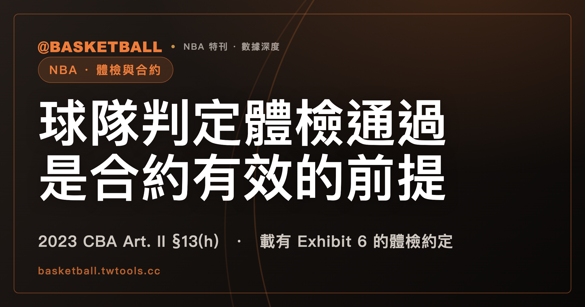

球隊判定體檢通過，是合約有效的前提：2023 NBA CBA 對載有 Exhibit 6 體檢約定的合約怎麼寫
2023 NBA CBA Article II Section 13(h) 對以 Exhibit 6 約定體檢的 Uniform Player Contract 寫明：球隊判定球員已通過體檢，是合約 validity 的 condition precedent；判定由球隊 in its sole discretion, exercised in good faith, in consultation with one or more of the Team’s physicians 作成。Section 14 另把球員未通過依 Exhibit 6 進行的體檢，列為 Player Contract fails to take effect or becomes void 的三種情形之一。

新手村｜合約入門・體檢與合約有效性
本文依據 2023 NBA CBA（封面標示 July 2023，官方 PDF，檔案取得日 2026 年 10 月 4 日）。對以 Exhibit 6 約定體檢的 Uniform Player Contract，球員目前能打，球隊卻有權 in good faith 依未來傷病風險判定他體檢未通過。這聽起來很反直覺。Article II Section 13(h) 把這句話放在一整串規定裡：體檢的時間點、誰來判定、判定之後合約在條文裡是什麼狀態。讀完這篇，拿到一個假設的合約情境，你可以自己逐字對照 §13(h)，判斷條文的字面結果。
先交代用詞。「體檢」（原文 physical examination）、「簽約」（原文 execution of the Contract）、「通過／未通過」（原文 passed／does not pass／failed to pass）是中文慣稱，規則文字裡沒有這幾個中文詞。business day、sole discretion、good faith、condition precedent 保留英文。以定義式寫法搜尋 CBA 全文，查無 business day 與 good faith 的定義條目。
體檢條文 §13(h) 管的是載有 Exhibit 6 體檢約定的合約（2023 NBA CBA）
2023 CBA Article II Section 3 開頭一句，框住球員與球隊在個別合約協商中能動的範圍：兩方可以修改 Uniform Player Contract 的條款，但僅限於其後列出的各點。§3(m) 是其中一點，內容是以載於 Exhibit 6 的條款，約定球員須報到並接受球隊指定醫師進行的體檢，並受 §13(h) 規範。
§13(h) 自己的引言範圍相同：它規範的是載於 Exhibit 6 to a Uniform Player Contract 的體檢約定，約定內容是球員須報到並接受球隊指定的一位或多位醫師進行的體檢。本文接下來所有關於時限、判定與有效性的句子，都限定在這種約定上。
醫師人數在三處的寫法不同。§3(m) 寫球隊指定 a physician，§13(h) 引言寫 one or more physician(s) designated by the Team，判定時的諮詢對象寫 one or more of the Team’s physicians。
報到體檢不晚於執行合約後第三個 business day，未通過通知不晚於第六個（2023 CBA）
在 Exhibit 6 約定之下，§13(h)(i) 寫了兩個時點。Exhibit 6 表單文字（在 Exhibit A 裡）對同樣的時間另有一組措辭。兩處並排：
| 時點 | §13(h)(i) | Exhibit 6 表單 |
|---|---|---|
| 體檢 | 球員在球隊指定的時間報到體檢，該時間不晚於執行合約後的第三個 business day | 體檢在執行合約後 3 個 business days 內進行（conducted within three (3) business days） |
| 通知或報告 | 球員未通過時，球隊通知球員，不晚於執行合約後的第六個 business day | 體檢結果在執行合約後 6 個 business days 內由球隊向球員報告（reported … within six (6) business days） |
兩處的數字都是 3 和 6，主詞與條件不一樣。§13(h)(i) 的第三個 business day 管的是球隊指定的報到時間，第六個 business day 管的是球隊對未通過球員的通知。表單的第六個 business day 管的是體檢結果的報告，句子沒有把範圍限在未通過。表單自己寫了 in accordance with Article II, Section 13(h)，但原文沒有說明兩種寫法如何合讀，兩處各寫各的。
business day 怎麼數，§13(h) 沒有講。Article XLII Section 2 是 CBA 時間期間的一般規則：除非另有明文，期間包含非 business day，但落在星期六、星期日或 Federal Holiday 的期限視為落在下一個 business day。§13(h) 與表單的文字沒有提到這一條，也沒有寫執行合約當日是否計入。本文不推算日期。
兩個時點之外，還有三件讀者會追問的事：球隊超過第六個 business day 才通知，會有什麼後果；有沒有補驗或重驗；體檢費用歸誰。§13(h)(i)(ii) 與 Exhibit 6 表單這兩段文字都沒有寫。
由球隊 in good faith 判定體檢是否通過，並可依未來傷病風險判未通過（2023 CBA）
先看球員這一邊。§13(h)(i) 寫球員報到之後須做三件事：提供被合理要求的所有資訊，對被問的所有問題提供完整且真實的答覆，接受被要求的所有檢查與測試。
判定的一邊，原文是這一句：
The determination of whether the player has passed the physical examination shall be made by the Team in its sole discretion, exercised in good faith, in consultation with one or more of the Team’s physicians
判定的主詞是 the Team。sole discretion 給球隊裁量，exercised in good faith 與 in consultation with one or more of the Team’s physicians 是接在後面的兩個成分。Exhibit 6 表單的合約文字也帶同樣三個成分。
§13(h)(i) 的另一句，把判定的理由往前延伸：
a Team shall have the right to determine in good faith that a player has failed to pass the physical examination due to the risk of a future injury, illness, or other medical condition notwithstanding that the player is currently able to play.
這句的主詞仍是球隊，動詞是「有權」（shall have the right）。理由可以是未來的 injury、illness 或 other medical condition 的風險。notwithstanding 子句寫明，球員目前能打不影響這項權利。這一句在 §13(h)(i) 裡有，Exhibit 6 表單的文字裡沒有。
這一節的判斷有兩個方向的材料。往球隊的方向看：判定權的主詞是球隊，措辭是 sole discretion，另有明寫的「目前能打也可以」。往限制的方向看：good faith 與諮詢隊醫都寫在判定這同一句裡。兩個限制各有多強，條文自己沒有給判準，本文不評估強弱。讀者可以主張這兩個成分對球隊是實質限制，也可以主張 sole discretion 才是重心。
§13(h) 與 Exhibit 6 表單的文字裡，也沒有出現異議、申訴、第二意見、仲裁這類程序用語。
球隊判定通過是合約 validity 的 condition precedent（2023 CBA）
§13(h)(ii) 的第一句寫的是合約的有效性：
The Team’s determination that the player has passed the physical examination shall be a condition precedent to the validity of the Contract.
主詞是 the Team’s determination，也就是球隊的判定。條文用 condition precedent 這個詞，把這個判定和合約的 validity 連在一起。
下一句以 Accordingly 承接：在球員通過體檢之前，§13(b) 所列的禁止繼續適用於球隊與球員。§13(b) 第一句的內容是，除非球員是當時有效（then in effect）的 Player Contract 的一方，球員不得參加任何球隊的 regular training camp，也不得隨時與該隊參加比賽或 organized practices。
Exhibit 6 表單從另一個位置寫到有效性。表單把體檢寫成球員與球隊的約定：除非球員通過體檢，這份合約 will be invalid and of no force and effect。
未通過 Exhibit 6 體檢是 Void Contracts 三種情形之一（2023 CBA §14）
Article II Section 14 的標題是 Void Contracts。它的引言這樣寫：
If a Player Contract fails to take effect or becomes void as a result of a Commissioner disapproval, the player’s failure to pass a physical examination conducted pursuant to Exhibit 6 to such Contract, or the rescission of a trade conducted pursuant to Article VII, Section 8(e), then, in each such case:
引言列了三種情形：Commissioner disapproval，球員未通過依 Exhibit 6 進行的體檢，依 Article VII Section 8(e) 進行的交易被撤銷（rescission）。引言內沒有編號，「三種」是本文的分法；§14 的款次是 (a)(b)(c)。
引言的 then, in each such case 之下，§14(a) 寫球隊繼續保有它在執行合約當時對這名球員所擁有的權利，包括（without limitation）它依 Article VII Section 6(b)、Article X、Article XI 所擁有的此類權利。這三處權利來源的內容本文不展開。§14(b)(c) 各有自己的文字，處理的是 Required Tender 與 Qualifying Offer，本文也不展開。
Exhibit 6 表單寫的是 invalid and of no force and effect，沒有「球隊保有原有權利」這句。球員之後能否與別的球隊簽約，§13(h)(i)(ii)、Exhibit 6 表單與 §14 引言至 (a) 這三段文字都沒有寫，本文不推論。
描述合約狀態的三個原文詞，2023 CBA 沒有寫它們等同
前面幾節出現過三個形容合約狀態的詞，位置各不相同：
| 原文用詞 | 出現位置 | 句子的結構 |
|---|---|---|
| condition precedent to the validity of the Contract | Art. II §13(h)(ii) | 球隊的判定「是」合約 validity 的 condition precedent |
| invalid and of no force and effect | Exhibit A 內的 Exhibit 6 表單 | 球員與球隊約定，除非球員通過體檢，否則合約 invalid and of no force and effect |
| fails to take effect or becomes void | Art. II §14 引言 | 三種情形之一發生，Player Contract fails to take effect or becomes void |
2023 CBA 沒有寫這三個詞等同，也沒有為它們互相下定義，本文因此各用原文詞，不統稱「作廢」。
字面也談體檢或合約有效性的四條，都不是 §13(h)（2023 CBA）
在 2023 CBA 裡找體檢或合約有效性的條文，除了 §13(h)，還會碰到下面四條：它們字面上也談到體檢或合約有效性，但各有自己的適用對象。
- Art. II §13(a)(ii)：在包含相關條件的 Player Contract 經雙方 duly executed 之前，NBA、任何球隊、工會或任何球員都不得主張關於僱傭條件的協議對球員或球隊有拘束力（Commissioner 核准或不核准 Player Contracts 的權限，以及這些核准或不核准對合約有效性的效力，不受影響）；它管的是協議何時拘束，不是 §13(h)。
- Art. VII §8(e)(3)：依 §8(e)(1) 或 (2) 簽訂（簽後交易）的 Player Contract 或 Extension 不得帶 Exhibit 6，但涉及該交易的各球隊仍可約定交易（and thus the validity of the Player Contract or Extension）以通過接收球隊（assignee-Team）指定醫師依 NBA procedures 進行的體檢為條件；它管的是交易條件，不是 §13(h)。
- Art. II §13(i)：球員明知自己有某種 injury、illness 或 other medical condition，且該狀況使他無法（或他明知將可能使他無法）履行 Player Contract 要求的比賽服務，未事先書面向球隊揭露，就不得 validly enter into 該合約；它管的是球員的揭露，是 §13 裡與 §13(h) 各自獨立的款次。
- Exhibit A Paragraph 7(f)：Uniform Player Contract 本文的一般體檢，時點是每個 contract year 的開始與結束，以及球隊合理認定醫療上必要的其他時間；原文沒有寫它與合約有效與否的關係，它也不是 §13(h)。
一份假設的合約，套進 2023 CBA §13(h) 會得到什麼字面結果？
下面四個情境都是假設，沒有任何真實球隊或球員。每個情境都假設那份 Uniform Player Contract 載有 Exhibit 6 的體檢約定。目標是判斷條文的字面結果，不是預測會發生什麼。
情境一：指定時間晚於第三個 business day。 假設甲隊指定某球員在執行合約後第四個 business day 報到體檢。§13(h)(i) 的括號寫球隊指定的時間不晚於第三個 business day，第四個晚於第三個，落在括號之外。Exhibit 6 表單寫體檢在 3 個 business days 內進行，第四個同樣超過。條文沒有寫指定時間落在括號之外的後果，字面上可以判斷的是它與時限不符。
情境二：第六個 business day 當天通知，與第七個才通知。 假設球隊判定某球員未通過，並在執行合約後第六個 business day 當天通知。§13(h)(i) 寫通知不晚於第六個，當天符合。如果球隊到第七個 business day 才通知，字面上晚於 §13(h)(i) 的時限。後果如前文所述，這兩段文字沒有寫。
情境三：體檢尚未通過，球員想參加練習。 假設某球員尚未通過體檢。§13(h)(ii) 寫在通過之前，§13(b) 的禁止繼續適用於球隊與球員。§13(b) 的禁止是：除非是當時有效的 Player Contract 的一方，球員不得參加 regular training camp，也不得與球隊參加比賽或 organized practices。字面結果是這項禁止仍然適用。
情境四：球員目前能打，球隊依未來風險判定未通過。 假設某球員體檢當天沒有任何傷病，目前能打。甲隊諮詢隊醫後，依未來傷病風險判定未通過。§13(h)(i) 的字面是球隊有權 in good faith 這樣判定，notwithstanding 目前能打。這個具體判定是否符合 good faith，本文不判斷。
自己動手時，可以照這四步檢查一份假設合約：第一，合約是否載有 Exhibit 6 的體檢約定；第二，報到時點與通知時點各是第幾個 business day；第三，判定的主詞是球隊，原文三成分是否都在；第四，談合約狀態時，用的是上表三個原文詞的哪一個。
本文的讀法是：§13(h) 把體檢寫成球隊的判定，並且把這個判定放在合約 validity 之前；球員在這幾款裡的位置是報到、如實回答與接受檢查。
常見問題
2023 NBA CBA 的體檢條款，適用所有球員合約嗎？
依 2023 NBA CBA Article II §3(m) 與 §13(h)，§13(h) 規範的是載於 Exhibit 6 to a Uniform Player Contract 的體檢約定。Exhibit A Paragraph 7(f) 的一般體檢，原文沒有寫它與合約有效與否的關係。詳見文中談適用範圍與談鄰近條款的兩節。
球員目前能打，球隊還能判定體檢未通過嗎？
依 2023 NBA CBA Article II §13(h)(i)，對以 Exhibit 6 約定體檢的 Uniform Player Contract，球隊有權 in good faith，以未來 injury、illness 或 other medical condition 的風險判定未通過，notwithstanding 球員目前能打。詳見文中談判定權的那一節。
體檢的兩個期限，分別是第幾個 business day？
依 2023 NBA CBA Article II §13(h)(i)，對以 Exhibit 6 約定體檢的合約，球隊指定的報到時間不晚於執行合約後第三個 business day，球員未通過時球隊的通知不晚於第六個。Exhibit 6 表單的措辭不同，見文中談兩個時點的那一節。
體檢沒通過，2023 NBA CBA 用什麼詞描述合約？
對以 Exhibit 6 約定體檢的合約，2023 NBA CBA 有三種原文詞：§13(h)(ii) 的 condition precedent to the validity、Exhibit 6 表單的 invalid and of no force and effect、Art. II §14 的 fails to take effect or becomes void，原文沒有寫它們等同。詳見文中談 §14 與談三個原文詞的兩節。
資料來源
- 2023 NBA CBA（官方 PDF）：封面標示 July 2023，檔案取得日 2026 年 10 月 4 日。本文用到 Article II §3(m)、§13(a)(ii)、§13(b)、§13(h)、§13(i)、§14，Article VII §8(e)(3)，Article XLII §2，Exhibit A（Uniform Player Contract）的 Exhibit 6 — Physical Exam 與 Paragraph 7(f)。
- 範圍與版本：本文只依 2023 NBA CBA 這一份文件；NBA 規則書與 FIBA 規則書不涉及此題。「沒有寫」類的敘述，範圍限於各處註明的條文段落；逾期通知的後果、補驗或重驗、費用與異議程序，在 §13(h)(i)(ii) 與 Exhibit 6 表單這兩段文字裡，本機快照查無。CBA 其他章是否另有規定或程序，本文沒有查，因此不主張球員沒有其他救濟。CBA 之後若有修訂，以官方發布的新版為準。